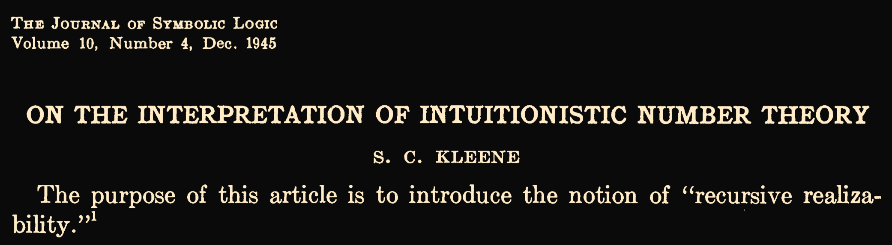
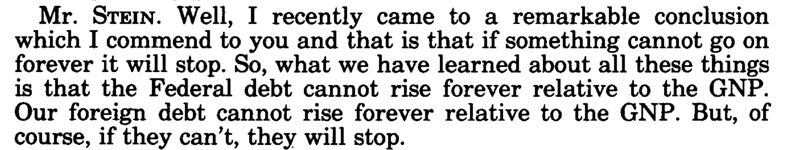
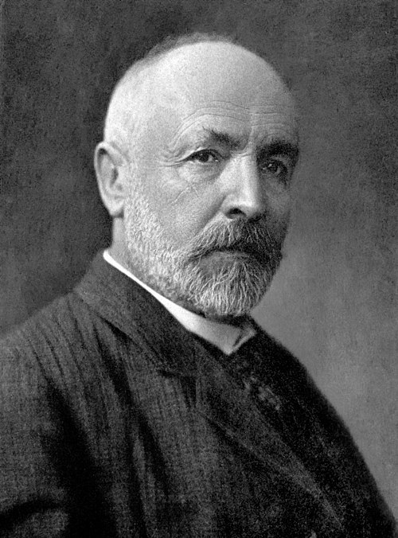
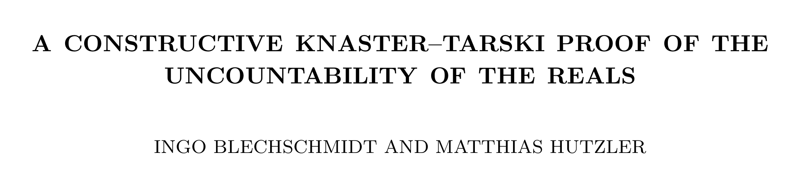

James E Hanson's
Constructive Math and the Continuous Degrees
1908

| \(\displaystyle e \Vdash \alpha \land \beta\) | \(\text{iff}\) | \(\displaystyle 1^{\text{st}}(e) \Vdash \alpha \land 2^{\text{nd}}(e) \Vdash \beta\) |
| \(\displaystyle e \Vdash \alpha \lor \beta\) | \(\text{iff}\) | \(\displaystyle \bigl(1^{\text{st}}(e) = 0 \land 2^{\text{nd}}(e) \Vdash \alpha\bigr)\)\(\displaystyle \lor\)\(\displaystyle \bigl(1^{\text{st}}(e) = 1 \land 2^{\text{nd}}(e) \Vdash \beta\bigr)\) |
| \(\displaystyle e \Vdash \alpha \to \beta\) | \(\text{iff}\) | \(\displaystyle \forall n\,\bigl(n \Vdash \alpha \to \varphi_e(n){\downarrow}\Vdash \beta\bigr)\) |
| \(\displaystyle e \Vdash \neg\alpha\) | \(\text{iff}\) | \(\displaystyle \forall n\,\neg(n \Vdash \alpha)\) |
| \(\displaystyle e \Vdash \forall x\,\alpha(x)\) | \(\text{iff}\) | \(\displaystyle \forall n\,\bigl(\varphi_e(n){\downarrow}\Vdash \alpha(n)\bigr)\) |
| \(\displaystyle e \Vdash \exists x\,\alpha(x)\) | \(\text{iff}\) | \(\displaystyle 2^{\text{nd}}(e) \Vdash \alpha\bigl(1^{\text{st}}(e)\bigr)\) |
| \(\displaystyle e \Vdash s = t\) | \(\text{iff}\) | \(\displaystyle s = t\) |
For any sentence \(\varphi\), either \(\varphi\) is realized or \(\neg\varphi\) is realized.
LEM?
Markov's Principle (Stein's Law)
\(\displaystyle \neg\forall n\,(f(n)\neq 0)\;\to\;\exists n\,(f(n)=0)\)

Numbered sets
A (partially) numbered set is a set \(X\) together with a partial surjection \(\nu : \mathbb{N} \rightharpoonup X\).
A map \((X_0,\nu_0)\to(X_1,\nu_1)\) is a function \(f : X_0\to X_1\) and a Turing index \(e\) such that \(\nu_1(\varphi_e(n){\downarrow}) = f(\nu_0(n))\) for all \(n\) in the domain of \(\nu_0\).
Cantor wasn't wrong

\[f:\mathbb{N}\to 2^{\mathbb{N}}\]
\[g(n)=1-f(n)(n)\]
An uncountable subset of \(\mathbb{N}\)
\(\displaystyle \mathrm{Tot}=\{e\in\mathbb{N}:\varphi_e\text{ is total}\}\)
For any \(f:\mathbb{N}\to\mathrm{Tot}\), there is an \(e\in\mathrm{Tot}\) not in the range of \(f\):
\[\varphi_e(n)=1+\varphi_{f(n)}(n)\]
What is \(\mathbb{R}\)?
A realizer for \(r \in \mathbb{R}\) is a Turing index \(e\) of a (rapidly converging) Cauchy sequence limiting to \(r\).
This means that \(\mathbb{R}\) admits a surjection from a subset of \(\mathbb{N}\): \[\{e \in \mathbb{N} : e \text{ computes a Cauchy sequence}\}\]
Gives a model of constructive math \(\to\) ‘There is no surjection from a subset of \(\mathbb{N}\) onto \(\mathbb{R}\)’ is not constructively provable.
Other kinds of countable?
Can you constructively prove...
- ...that there is no injection from \(\mathbb{R}\) into \(\mathbb{N}\)?
- ...that there is no surjection from \(\mathbb{N}\) onto \(\mathbb{R}\)?
- ...that there is no bijection between \(\mathbb{N}\) and \(\mathbb{R}\)?
injection \(\mathbb{R}\) into \(\mathbb{N}\) \(\to\) \(\mathbb{R}\) has decidable equality \(\to\) no surjection \(\mathbb{N}\) onto \(\mathbb{R}\)
Variants of realizability
- (Kreisel 1957) Modified realizability adds ‘potential realizers’ in order to not satisfy Markov's principle.
- (Bauer 2011) Ordinal-time Turing machine realizability: Injection from \(\mathbb{R}\) into \(\mathbb{N}\).
Continuous degrees
(Miller 2004) Degrees for points in computable metric spaces:
\[a \leq_r b\]
iff
every name of \(b\) computes a name of \(a\)
iff
same but uniformly
Non-total continuous degrees
Kakutani's fixed-point theoremBrouwer (non-constructive) \(\to\) There is a \(\mu\in[0,1]^{\mathbb{N}}\) such that if \(\varphi_e^p\) computes a fixed element of \([0,1]\) for all names \(p\) of \(\mu\), then that element is \(\mu(e)\).
Smells like a surjection from \(\mathbb{N}\) onto \([0,1]\)
“A long time ago, the Japanese mathematician Kakutani asked me why so many economists had attended the lecture he had just given. When I told him that he was famous because of the Kakutani fixed-point theorem, he replied, ‘What is the Kakutani fixed-point theorem?’” -Ken Binmore
Parameterized realizability
Fix a nonempty set of oracles \(\mathbb{P}\subseteq 2^{\mathbb{N}}\).
| \(\displaystyle e \Vdash \alpha \land \beta\) | \(\text{iff}\) | \(\displaystyle 1^{\text{st}}(e) \Vdash \alpha \land 2^{\text{nd}}(e) \Vdash \beta\) |
| \(\displaystyle e \Vdash \alpha \lor \beta\) | \(\text{iff}\) | \(\displaystyle \bigl(1^{\text{st}}(e) = 0 \land 2^{\text{nd}}(e) \Vdash \alpha\bigr)\)\(\displaystyle \lor\)\(\displaystyle \bigl(1^{\text{st}}(e) = 1 \land 2^{\text{nd}}(e) \Vdash \beta\bigr)\) |
| \(\displaystyle e \Vdash \alpha \to \beta\) | \(\text{iff}\) | \(\displaystyle \forall p\in\mathbb{P}\;\forall n\,\bigl(n \Vdash \alpha \to \varphi_e^p(n){\downarrow}\Vdash \beta\bigr)\) |
| \(\displaystyle e \Vdash \neg\alpha\) | \(\text{iff}\) | \(\displaystyle \forall n\,\neg(n \Vdash \alpha)\) |
| \(\displaystyle e \Vdash \forall x\,\alpha(x)\) | \(\text{iff}\) | \(\displaystyle \forall p\in\mathbb{P}\;\forall n\,\bigl(\varphi_e^p(n){\downarrow}\Vdash \alpha(n)\bigr)\) |
| \(\displaystyle e \Vdash \exists x\,\alpha(x)\) | \(\text{iff}\) | \(\displaystyle 2^{\text{nd}}(e) \Vdash \alpha\bigl(1^{\text{st}}(e)\bigr)\) |
| \(\displaystyle e \Vdash s = t\) | \(\text{iff}\) | \(\displaystyle s = t\) |
Parameterized numbered sets
Fix a nonempty set of oracles \(\mathbb{P}\subseteq 2^{\mathbb{N}}\).
A parameterized numbered set is a set \(X\) together with a partial surjection \(\nu : \mathbb{N} \rightharpoonup X\).
A map \((X_0,\nu_0)\to(X_1,\nu_1)\) is a function \(f : X_0\to X_1\) and a Turing index \(e\) such that \(\nu_1(\varphi_e^p(n){\downarrow}) = f(\nu_0(n))\) for all \(p\in\mathbb{P}\) and all \(n\) in the domain of \(\nu_0\).
What is \(\mathbb{R}\) this time? Countable
Fix \(\mu \in [0,1]^{\mathbb{N}}\). Let \(\mathbb{P}\) be the set of names of \(\mu\).
A realizer for \(r \in \mathbb{R}\) is an index \(e\) that computes a Cauchy sequence of \(r\) from any \(p \in \mathbb{P}\). Note that the sequence can depend on \(p\).
\(\mu : \mathbb{N} \to [0,1]\) is surjective ‘in the sense of realizability’: There is a program that, for any realizer \(e\) of \(x \in [0,1]\), computes an \(n\) such that \(\mu(n) = x\) (using any given \(p\) as an oracle).
(It's just the identity map. Doesn't even use \(p\).)
\(f(n) = 1^{\mathrm{st}}(n) \cdot (\mu(2^{\mathrm{nd}}(n)) - \frac{1}{2})\) is a surjection from \(\mathbb{N}\) onto \(\mathbb{R}\).
What can you prove?

Corollary: For any \(f : \mathbb{N} \to [0,1]\), there is a nonempty set \(X \subseteq [0,1]\) such that for each \(n\), \(f(n)\) is not the supremum of \(X\).
(me) For any \(f : \mathbb{N} \to [0,1]\), there is a non-decreasing \(g : \mathbb{N} \to [0,1]\) such that for each \(n\), \(f(n)\) is not the supremum of \(g\).